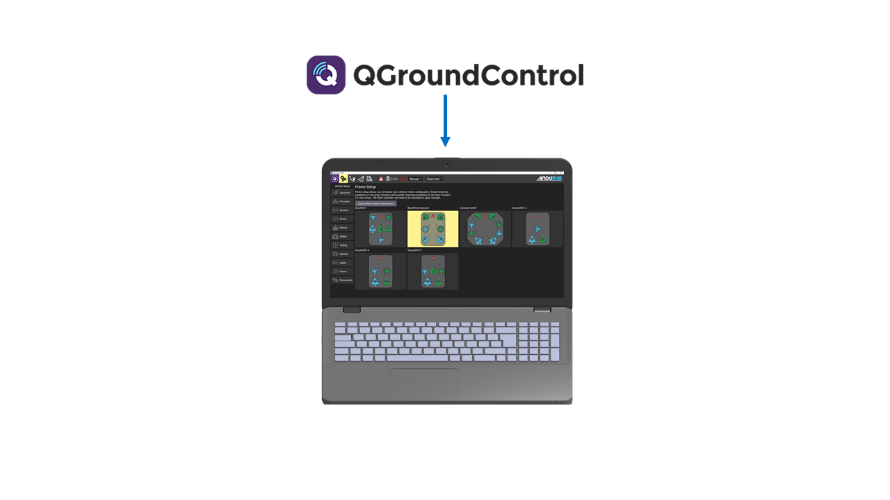
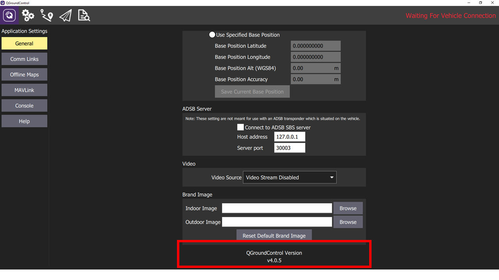

QGroundControl Software
QGroundControl (QGC) is the Graphical User Interface (GUI) for ArduSub, which provides setup and control functionality. QGC runs on Windows, OS X, and Linux platforms.
Key Features:
- Full setup/configuration of ArduSub powered vehicles.
- Video streaming with instrument display overlays.
- Map display showing vehicle position, track, and waypoints for vehicles using an underwater positioning system.

The QGC user interface is implemented using Qt QML. QML provides for hardware acceleration which is a key feature on lower powered devices such as tablets or phones. QML also provides features which allows creation of a single user interface which can adapt itself to differing screen sizes and resolution.
Versioning
There are two versions of QGroundControl software:
- Stable (4.0.X): The recommended build for most users.
- Daily (Development HEAD | Git Revision | Date | Time): Development build, updated frequently. These builds are for development purposes only and not recommended for regular use.
What Version is Installed?
To find out what software version is installed on your topside computer, navigate to the Application Settings and scroll to the bottom of the General tab.

Release History
QGroundControl release history is available here.